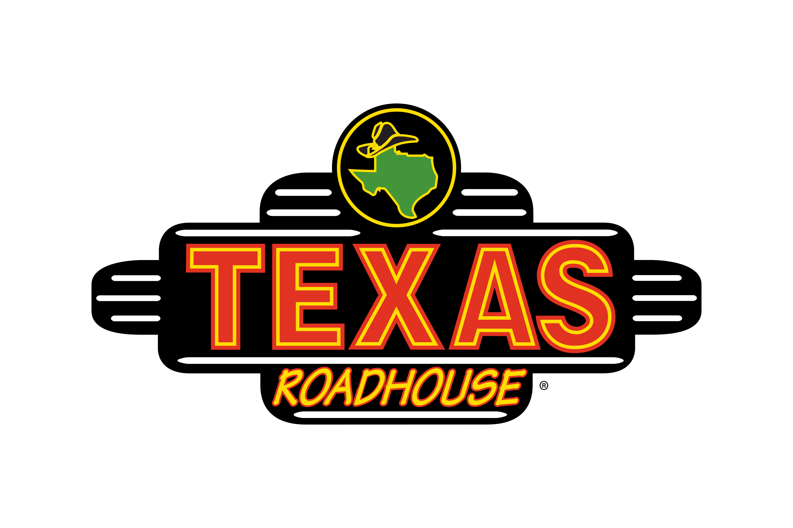

- Stock your POS with boxes if available, don't take boxes from other POS stations!
- Refill any sugars or portion lids that need it.
- Remove the trash can and take the trash bag out to the dumpster.
- Put a new trash bag into the trash can.
- Make sure you have at least 2 thermal paper rolls (1ply, white paper... should feel glossy)
- Wipe down the station:
- POS
- Top of the station (corners and crevices included)
- Trash lid and below where it was sitting.
- Highchairs Highchairs Highchairs. Children are messy eaters, please clean these well!!
- Shelves
- Sweep the station, be generous about your space. If you don't sweep far enough your checker will ask you to.
- 300's POS ONLY
- The liquor cabnets near the bathroom will need your attention:
- Clean the highchairs very well.
- Wipe off the top of the cabinet
- Sweep around and under the cabinet
- You don't need to sweep the bathroom entry-way, that is the hosts responsibility